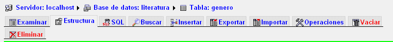

Para poder rellenar una base de datos primero hay que abrir la tabla en phpMyAdmin, luego en la parte de arriba aparecerá una serie de opciones:
Pulsamos sobre "insertar" y se nos abre una nueva pantalla
Nos sale un panel para insertar nuevos registros en la tabla. Este panel puede estar repetido, para insertar dos registros a la vez, si queremos insertar sólo uno rellenaremos sólo la primera parte, y si queremos ver el panel sólo para un registro, iremos a la parte de abajo, donde pone "reinicie la inserción con 2 filas", cambiamos el 2 por el 1, y nos quedaremos con un solo panel para insertar.
Los datos a insertar los escribiremos en la columna "Valor", para cada uno de los campos. Los campos que empiezan por id (con autoincremento) no los rellenaremos, por lo que aquí rellenamos el primer dato para el
La columna "Función", a no ser que queramos hacer algún tipo de operación con los datos que insertamos, la dejaremos siempre en blanco. Vamos a la parte de abajo, donde pone "grabar y luego volver", dejamos las opciones como están, y debajo de ellas pulsamos en "continuar". Nos aparece la siguiente pantalla:
Nos aparece la tabla en vista "examinar", en la cual aparecen los diferentes registros de la tabla. Si queremos ver la tabla en la vista que estaba antes, pulsamos en la parte superior en "estructura" y si queremos volver a insertar un nuevo registro pulsamos en la parte superior en insertar, y volvemos a comenzar el proceso. Es posible que al pulsar en "continuar" al acabar de insertar un registro, no nos salga la vista "examinar" sino la vista "SQL", podemos cambiar la vista desde la parte superior de la página, pulsando en examinar. Ahora en vista examinar, veremos la tabla con los tres registros que hemos incluido:
Para iniciar hay que ingresar a Mysql Workbench y seleccionar la opción Data Export, tal como se señala en la figura:
Aquí seleccionamos la base de datos que queremos respaldar en nuestro caso seleccionaremos la BD “bdinventario”.
Aparecen por defecto seleccionadas todas las tablas de la base de datos. En las opciones de la parte inferior debemos escoger si queremos crear en una carpeta varios archivos por cada tabla o un solo archivo para toda la base de datos, en nuestro caso elegimos la segunda opción:
Luego debemos seleccionar la ubicación y el nombre de nuestro archivo sql para poder guardarlo. Nos aparecerá la siguiente pantalla y escogemos la ubicación y el nombre del archivo
luego hay que presionar el botón que dice Start Export. se aparecerá la siguiente pantalla donde esperamos que Mysql Workbench termine su trabajo.
Para verificar que todo ha sido correcto buscamos el archivo donde lo guardamos y lo abrimos con el bloc de notas para ver su contenido.
Luego de abrir MySQL Workbench, en la ventana principal de MySQL Workbench, verá una nueva conexión debajo de la línea MySQL Connections. Haga doble clic en él para establecer una conexión con su cuenta de alojamiento y comenzar a administrar sus bases de datos.
Cuando abra una conexión a su cuenta, verá una nueva ventana que tiene varias herramientas disponibles para su uso. Puede utilizar estas herramientas para restaurar una base de datos. Para restaurar una copia de seguridad de una base de datos de mysql en su máquina local, puede usar la herramienta de importació de datos de la columna del lado izquierdo.
• Luego seleccione la ruta desde la cual se deben importar las tablas en el campo Importar desde la carpeta del proyecto de o use la opción Importar desde un archivo autónomo si tiene una copia .sql de la base de datos.